Il corpo della maggior parte degli animali (incluso l’essere umano) è costituito da una varietà di cellule specializzate.
Le cellule specializzate si organizzano a formare tessuti differenti.
Gli scienziati hanno notato gruppi di cellule che tendevano a svolgere funzioni comuni. Questa osservazione ha permesso di classificare i tessuti in quattro grandi categorie: epiteliale, connettivo, muscolare e nervoso.
La branca della biologia che studia i tessuti si chiama Istologia.
Sezioni del sito
Tutti i tessuti animali hanno una caratteristica in comune: la presenza della matrice extracellulare in cui le cellule del tessuto in questione sono immerse.
composizione della matrice extracellulare
la matrice extracellulare è composta da un substrato (che cambia consistenza a seconda del tessuto) e da fibre.
il substrato è formato principalmente da acqua, proteine, carboidrati e lipidi, nell’osso contiene anche minerali.
le fibre di collagene sono le fibre più presenti e si trovano principalmente nelle ossa e nei tendini. Anche l’elastina è una proteina molto importante e serve per rendere la matrice più elastica.
| TESSUTO | DESCRIZIONE | LOCALIZZAZIONE |
|---|---|---|
| EPITELIALE | Strato singolo o più strati di cellule di diverse forme che rivestono le superfici interne e esterne degli organi. | ghiandole, rivestimento interno dei vasi sanguigni e di altri organi, pelle. |
| CONNETTIVO | cellule sparse nella matrice extracellulare che conferiscono funzione, adesione, isolamento, collegamento e trasporto. | tendini, legamenti, cartilagini, ossa, sangue e depositi di grasso. |
| MUSCOLARE | cellule di forma allungata che si contraggono quando vengono stimolate, fondamentali per il movimento. | muscoli scheletrici, cuore, arterie, apparato digerente. |
| NERVOSO | cellule che trasmettono impulsi elettrochimici per una comunicazione rapida fra tutte le cellule. | cervello, midollo spinale, nervi. |
I tessuti epiteliali rivestono le superfici esterne e le cavità interne; sono di diverse tipologie a seconda della loro struttura, da cui dipende anche la loro funzione specifica.
| TESSUTI EPITELIALI SEMPLICI | TESSUTI EPITELIALI STRATIFICATI/PSEUDOSTRATIFICATI |
|---|---|
tessuto epiteliale pavimentoso semplice 
|
tessuto epiteliale pavimentoso stratificato 
|
tessuto epiteliale cuboidale semplice 
|
tessuto epiteliale cuboidale stratificato
|
tessuto epiteliale cilindrico semplice 
|
tessuto epiteliale cilindrico pseudostratificato
|
| EPITELIALE PAVIMENTOSO composto da cellule appiattite, a seconda degli strati permette il passaggio di sostanze tramite osmosi ma protegge anche le aree soggette all’abrasione, previene disidratazione e infezioni. semplice: riveste principalmente vasi sanguigni, alveoli polmonari e glomeruli renali. stratificato: tutti i rivestimenti a contatto con l’esterno. |
EPITELIALE CUBOIDALE Composto da cellule a forma di cubo,a seconda degli strati può secernere e assorbire sostanze o emettere sudre e secernere ormoni. Semplice:ghiandole e tubuli renali. Stratificato:dotti delle ghiandole sudoripare;ovaie. |
EPITELIALE CILINDRICO cellule allungate a forma di colonna. secerne e assorbe sostanze;fa scorrere l’ovulo. Semplice:apparato digerente,bronchi,tube uterine. tratto respiratorio inferiore. |
Il tessuto connettivoè composto da cellule disperse all’interno della matrice extra cellulare e non sono unite fra di loro.
| TESSUTI CONNETTIVI PROPRIAMENTE DETTI | |
|---|---|
|
TESSUTO CONNETTIVO LASSO
La consistenza poco compatta è data dall’abbondanza di substrato e dalla presenza di fibre elastiche e collagene. LOCALIZZAZIONE:Sotto la pelle e fra gli organi. |
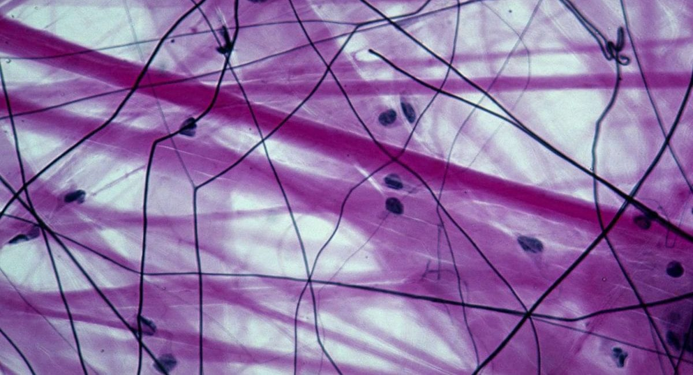 Foto:BioPills |
|
TESSUTO CONNETTIVO DENSO
Le fibre di collagene sono fittamente intrecciate,rispetto al connettivo lasso è molto scarso. LOCALIZZAZIONE:Derma,tendini e legamenti |
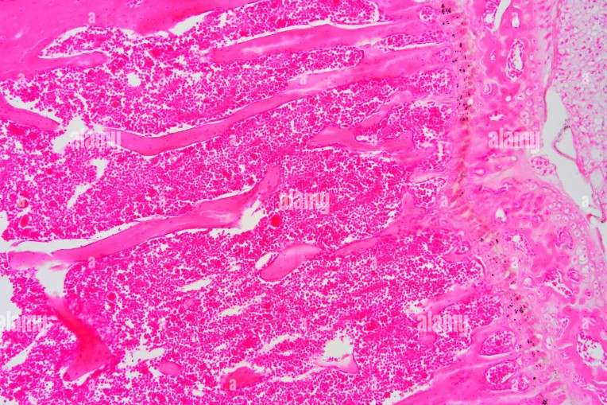 Foto:Alamy |
| TESSUTI CONNETTIVI SPECIALIZZATI | |
|
TESSUTO ADIPOSO
E’ l’unico tessuto connettivo in cui le cellule occupano più spazio della matrice extracellulare, LOCALIZZAZIONE: sotto la pelle e nella cavità addominale. |
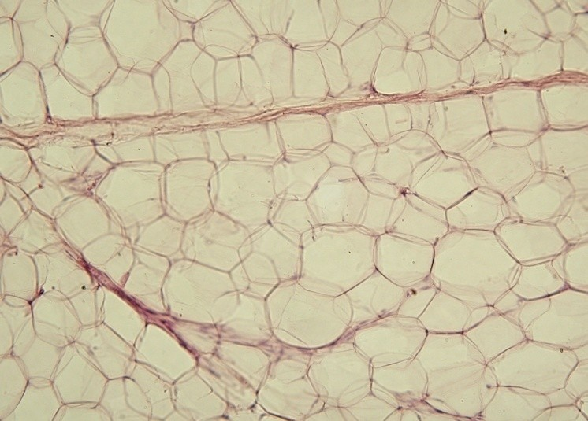 Foto:Wikipedia |
|
SANGUE
E’ un tessuto connettivo liquido composto da : LOCALIZZAZIONE: apparato cardiovascolare (vasi sanguigni e cuore) |
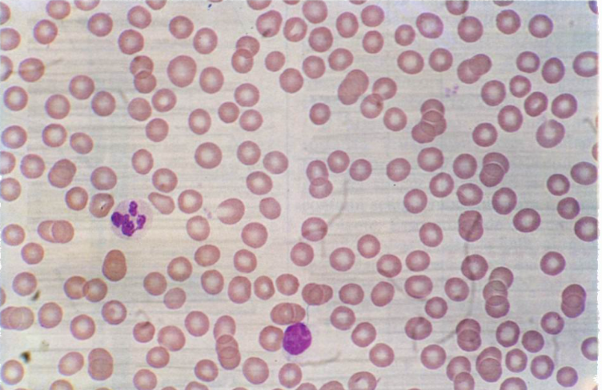 Foto:medicinapertutti.it |
|
CARTILAGINE
La cartilagine è costituita dalle cellule che sono immerse in una matrice dalla consistenza gommosa. LOCALIZZAZIONE: sistema scheletrico |
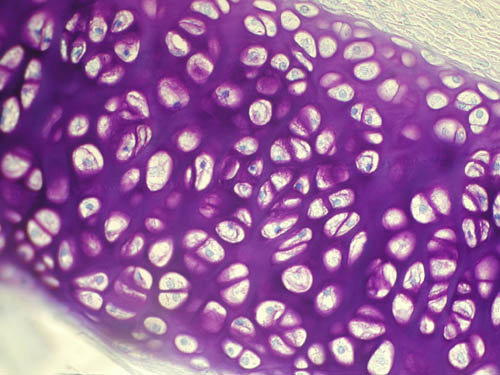 Foto:Atlante Istologia e Citologia |
|
OSSO
Il tessuto osseo è rigido e robusto grazie alla presenza di sali minerali all’interno della matrice. LOCALIZZAZIONE: sistema scheletrico |
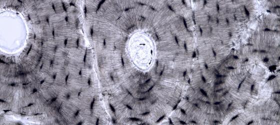 Foto:UniGe |
Il tessuto muscolare è composto da cellule che se stimolate elettricamente si contraggono.
| MUSCOLO LISCIO | MUSCOLO STRIATO | |
|---|---|---|
|
tessuto muscolare liscio 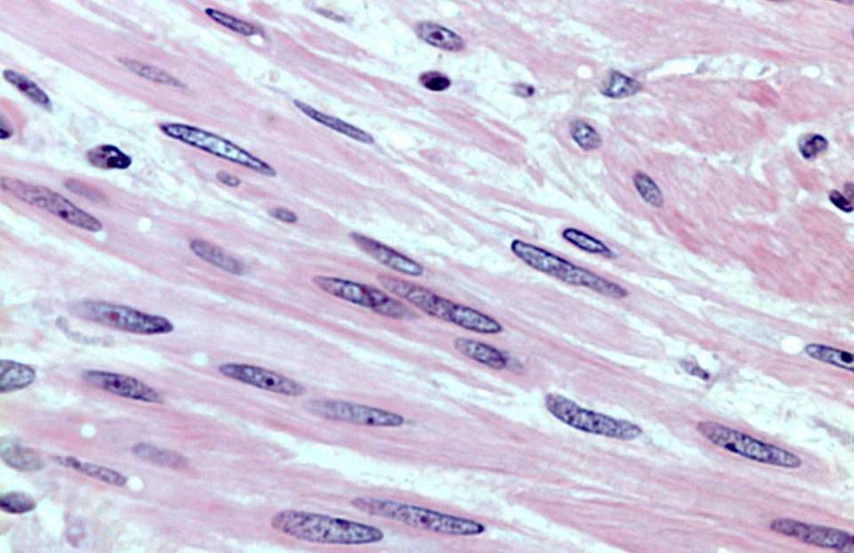 Foto:UniGe |
tessuto muscolare scheletrico 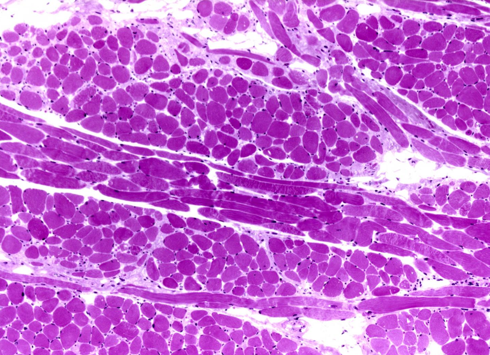 Foto:UniGe |
tessuto muscolare cardiaco 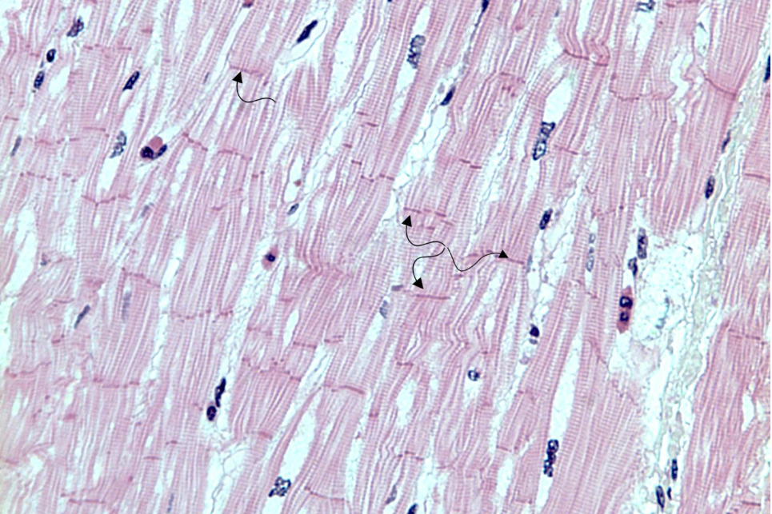 Foto:UniGe |
| MUSCOLO LISCIO: Cellule a forma di fuso ciascuna contenente un nucleo. genera movimenti lenti e involontari. Si trova nel tubo digerente e nei vasi sanguigni. |
MUSCOLO SCHELETRICO: Cellule allungate polinucleate,appare striato. muve le ossa dello scheletro(muscolo volontario). Innestato nell’osso. |
MUSCOLO CARDIACO: Cellule corte e ramificate ciascuna contenente un nucleo. contrazione di atri e ventricoli del cuore(involontario). Si trova nelle pareti del cuore. |
Il tessuto nervoso svolge funzione di coordinamento e controllo dell'organismo trasmettendo molto rapidamente le informazioni all’interno di tutto il corpo.
Questo tessuto è composto da due tipi di cellule: i NEURONI e le CELLULE GLIALI .
Inoltre si divide in sistema nervoso CENTRALE composto da cervello e midollo spinale, e sistema nervoso PERIFERICO che si estende in tutto il resto del corpo.
|
NEURONE
I neuroni sono l’unità funzionale del sistema nervoso, sono costituiti da: |
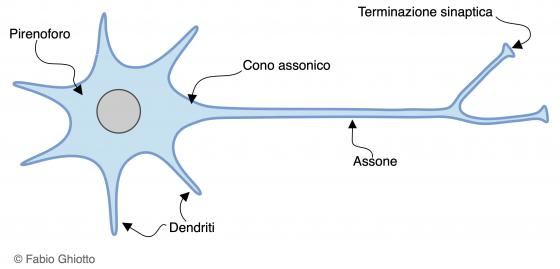 Foto:UniGe |
|
CELLULE GLIALI
Le cellule gliali sono elementi fondamentali che assistono e permettono il corretto funzionamento dei neuroni, un esempio sono le cellule di Schwann che formano dei “manicotti” attorno all’assone composti da un rivestimento lipidico detto guaina mielinica. |
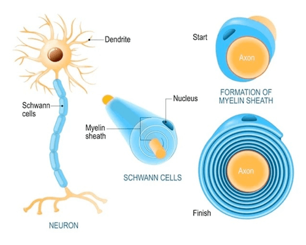 Foto:chimica-online |
Sito creato da: Marco Rocchi, Mattia Canensi, Mattia Farnese